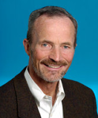

Procesadores: la ley de Moore
 ☝ La ley de Moore expresa que aproximadamente cada dos años se duplica el número de transistores en un circuito integrado. Se trata de una ley empírica, formulada por el cofundador de Intel, Gordon E. Moore, el 19 de abril de 1965, cuyo cumplimiento se ha podido constatar hasta hoy.
En 1965, Gordon Moore afirmó que la tecnología tenía futuro, que el número de transistores por unidad de superficie en circuitos integrados se duplicaba cada año y que la tendencia continuaría durante las siguientes dos décadas. Más tarde, en 1975, modificó su propia ley al corroborar que el ritmo bajaría, y que la capacidad de integración se duplicaría aproximadamente cada 18 meses. Esta progresión de crecimiento exponencial, duplicar la capacidad de los circuitos integrados cada dos años, es lo que se denomina ley de Moore. Sin embargo, el propio Moore determinó una fecha de caducidad para su ley: "Mi ley dejará de cumplirse dentro de 10 o 15 años -desde 2007-", según aseguró durante la conferencia en la que afirmó, no obstante, que una nueva tecnología vendrá a suplir a la actual.
La ley se mantuvo en pie hasta 2013, pero se ha ralentizado desde entonces y lo seguirá haciendo en los próximos años.
☝ La ley de Moore expresa que aproximadamente cada dos años se duplica el número de transistores en un circuito integrado. Se trata de una ley empírica, formulada por el cofundador de Intel, Gordon E. Moore, el 19 de abril de 1965, cuyo cumplimiento se ha podido constatar hasta hoy.
En 1965, Gordon Moore afirmó que la tecnología tenía futuro, que el número de transistores por unidad de superficie en circuitos integrados se duplicaba cada año y que la tendencia continuaría durante las siguientes dos décadas. Más tarde, en 1975, modificó su propia ley al corroborar que el ritmo bajaría, y que la capacidad de integración se duplicaría aproximadamente cada 18 meses. Esta progresión de crecimiento exponencial, duplicar la capacidad de los circuitos integrados cada dos años, es lo que se denomina ley de Moore. Sin embargo, el propio Moore determinó una fecha de caducidad para su ley: "Mi ley dejará de cumplirse dentro de 10 o 15 años -desde 2007-", según aseguró durante la conferencia en la que afirmó, no obstante, que una nueva tecnología vendrá a suplir a la actual.
La ley se mantuvo en pie hasta 2013, pero se ha ralentizado desde entonces y lo seguirá haciendo en los próximos años.
Discos duros: la ley de Kryder

✍ Mark Kryder, nacido en 1943, fue el vicepresidente de investigación de Seagate, uno de los grandes fabricante de discos duros.
En un artículo publicado en 2005 en Investigación y Ciencia, se hablaba del trabajo de Mark Kryder y del hecho de que la densidad de almacenamiento de los discos magnéticos crecía a un ritmo mayor que el de la Ley de Moore .
Desde que en 1956 se introdujeron los discos duros magnéticos, con un densidad de 2 kilobit por pulgada cuadrada, se había llegado en 2005 a discos con densidades de 110 gigabit por pulgada cuadrada, pero desde entonces el crecimiento se ha ralentizado.
De haber seguido la evolución anterior, en 2020 un disco de 2.5" de dos platos almacenaría más de 14 TB y no costaría más de 40$. En realidad, a principios de 2020 un disco de 3.5" de 14 TB cuesta 400$.
Software: la ley de Wirth
 ⭐ Las leyes anteriores han alentado siempre el "tecnoptimismo" que predice un futuro maravilloso. Pero Niklaus Wirth, uno de los grandes padres de la informática y creador de los lenguajes de programación Pascal, Modula y Oberon estableció en 1995 la llamada Ley de Wirth para rebajar ese optimismo. La ley establece que:
El software se ralentiza más deprisa de lo que se acelera el hardware.
Cualquier usuario puede dar fe de la existencia de esta ley. Compramos un ordenador o teléfono nuevo y los programas se ejecutan a toda velocidad, pero tras cada actualización todo va cada vez más lento, hasta que no podemos resistirlo más y nos compramos otro ordenador o teléfono. Como se suele decir: ¿casualidad? No lo creo ;-)
⭐ Las leyes anteriores han alentado siempre el "tecnoptimismo" que predice un futuro maravilloso. Pero Niklaus Wirth, uno de los grandes padres de la informática y creador de los lenguajes de programación Pascal, Modula y Oberon estableció en 1995 la llamada Ley de Wirth para rebajar ese optimismo. La ley establece que:
El software se ralentiza más deprisa de lo que se acelera el hardware.
Cualquier usuario puede dar fe de la existencia de esta ley. Compramos un ordenador o teléfono nuevo y los programas se ejecutan a toda velocidad, pero tras cada actualización todo va cada vez más lento, hasta que no podemos resistirlo más y nos compramos otro ordenador o teléfono. Como se suele decir: ¿casualidad? No lo creo ;-)